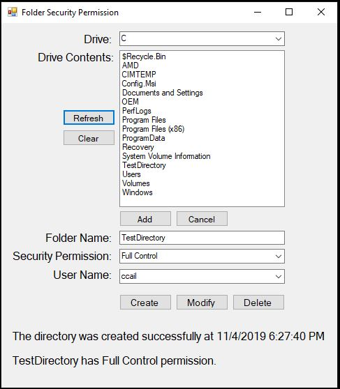

My name is Carlo Capuz. I am a passionate programmer with two years of experience. I like creating console applications using C# and Java. I also like developing desktop applications using Windows Forms, WPF and UWP. I know how to create custom applications for Android, create and design interactive websites using HTML, CSS, JavaScript and PHP.
My name is Carlo Capuz. I am a passionate programmer with two years of experience. I like creating console applications using C# and Java. I also like developing desktop applications using Windows Forms, WPF and UWP. I know how to create custom applications for Android, create and design interactive websites using HTML, CSS, JavaScript and PHP.
Click the button below to see my bio.
More About Me
Internship Experience
For my internship, I was a software developer for the I.T. Services team at NHTI, Concord's Community College. Here are some of the projects I did:
For my internship, I was a software developer for the I.T. Services team at NHTI, Concord's Community College. Here are some of the projects I did:

Maps the user's drive and gives full permissions.

Creates folder on the selected drive and sets user permission using the console.

Creates folder on the selected drive and sets user permission using the designed GUI.

Added more features like list drive contents. Creates folder on the selected drive and sets user permission using the designed GUI.
Click on the project names to see the source code of the applications.
Click the button below to see the internship page.
More Details
My Blog
I don't know if people still read blogs, but I created this to get my thoughts out of my head.

Coding Best Practices
Thu 5 Dec 2019
Some best practices a programmer should always have in mind.
Read More

George Miller: A Significant Transition in Life
Thu 5 Dec 2019
George Miller, a.k.a. Joji, Filthy Frank or Pink Guy, went from posting weird, gross and sketchy videos on the internet to making music, pulling in millions of streams.
Read More